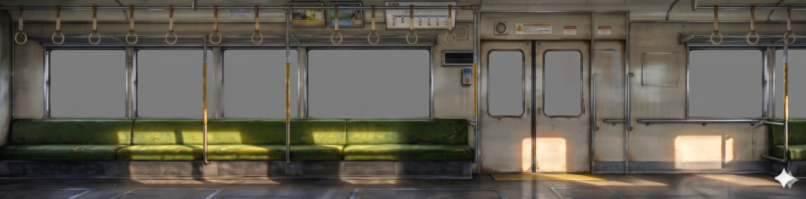
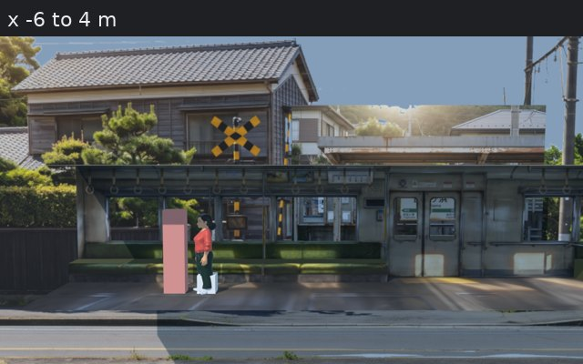
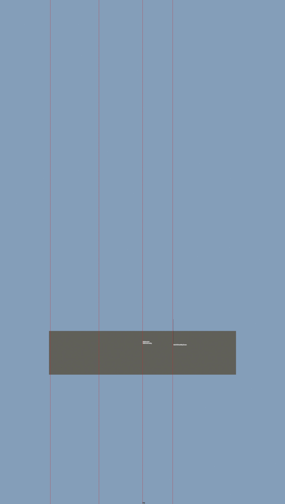

The second leg of route 1 is the ride (mini-game M1): the kid rides the Enoden tram from Hase toward Kamakura. Its set is built from your three photographic set pictures, KM1-2a to c, for your approval.
A fixed side-on camera inside the tram: the car's far wall across the aisle, the town sliding past its windows, the stations outside the door at each stop. The kid stands in the aisle with the ball.

The set as the game camera frames it: the car's far wall, the town behind its windows (here at rest), Yuigahama's platform outside the door, the grandmother who boards there. The ride's own camera is inside the car and frames the car alone; the board's, further back, also sees over the car's wall. The shading is Blender's, not the game's toon look.


| x (m) | What happens |
|---|---|
| -6 | board: tap the card reader in time, before the door chime ends |
| 0 | ride: keep the ball still against the sway (the stick), hold KICK through a hard brake |
| -3 | the grandmother boards at Yuigahama: give up your seat for a bonus |
| 2 | get off: the next-stop display names each stop; press STOP at Kamakura's |
| x (m) | Model | Why there |
|---|---|---|
| 0.0 | KmTramCar | the car: its floor from just before the kid to its far wall 1.3 m behind the aisle, the benches (KM-B42) |
| 0.0 | KmTownPassing | the town passing behind the windows, its street 1 m below the car's floor; the ride slides it past and repeats it (KM-B43) |
| 1.8 | KmPlatformYuigahama | Yuigahama's platform outside the door at the first stop (KM-B44; Wadazuka's and Kamakura's at the next two) |